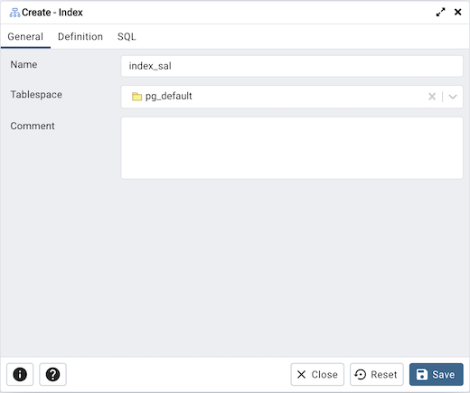
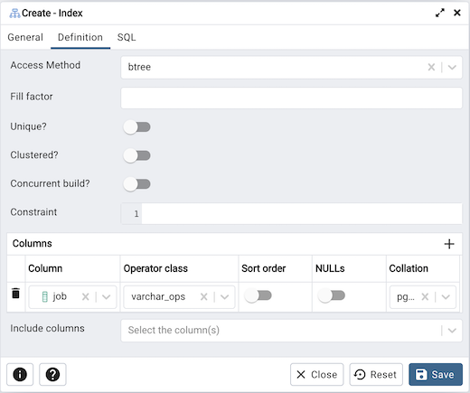
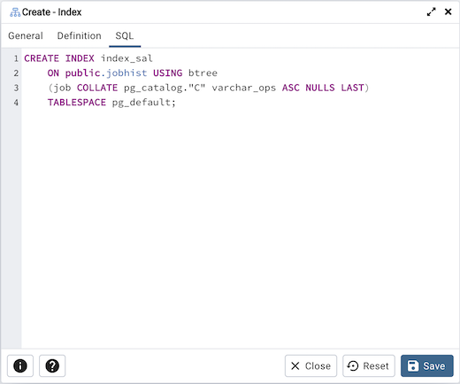

Index Dialog¶
Use the Index dialog to create an index on a specified table or materialized view.
The Index dialog organizes the development of a index through the following dialog tabs: General and Definition. The SQL tab displays the SQL code generated by dialog selections.
Use the fields in the General tab to identify the index:
Use the Name field to add a descriptive name for the index. The name will be displayed in the pgAdmin tree control.
Use the drop-down listbox next to Tablespace to select the tablespace in which the index will reside.
Store notes about the index in the Comment field.
Click the Definition tab to continue.
Use the fields in the Definition tab to define the index:
Use the drop-down listbox next to Access Method to select an index type:
Select btree to create a B-tree index. A B-tree index may improve performance when managing equality and range queries on data that can be sorted into some ordering (the default).
Select hash to create a hash index. A hash index may improve performance when managing simple equality comparisons.
Select gist to create a GiST index. A GiST index may improve performance when managing two-dimensional geometric data types and nearest-neighbor searches.
Select gin to create a GIN index. A GIN index may improve performance when managing values with more than one key.
Select spgist to create a space-partitioned GiST index. A SP-GiST index may improve performance when managing non-balanced data structures.
Select brin to create a BRIN index. A BRIN index may improve performance when managing minimum and maximum values and ranges.
Use the Fill Factor field to specify a fill factor for the index. The fill factor specifies how full the selected method will try to fill each index page.
Move the Unique? switch to the Yes position to check for duplicate values in the table when the index is created and when data is added. The default is No.
Move the Clustered? switch to the Yes position to instruct the server to cluster the table.
Move the Concurrent build? switch to the Yes position to build the index without taking any locks that prevent concurrent inserts, updates, or deletes on the table.
Use the Constraint field to provide a constraint expression; a constraint expression limits the entries in the index to those rows that satisfy the constraint.
Use the context-sensitive fields in the Columns panel to specify which column(s) the index queries. Click the Add icon (+) to add a column:
Use the drop-down listbox in Column field to select the name of the column rom the table.
If enabled, use the drop-down listbox to select an available Operator class to specify the type of action performed on the column.
If enabled, move the Sort order switch to specify the sort order:
Select ASC to specify an ascending sort order (the default);
Select DESC to specify a descending sort order.
If enabled, move the Nulls switch to specify the sort order of nulls:
Select First to specify nulls sort before non-nulls;
Select Last to specify nulls sort after non-nulls (the default).
Use the drop-down listbox in the Collation field to select a collation to use for the index.
Use Include columns field to specify columns for INCLUDE clause of the index. This option is available in Postgres 11 and later.
Click the SQL tab to continue.
Your entries in the Index dialog generate a SQL command (see an example below). Use the SQL tab for review; revisit or switch tabs to make any changes to the SQL command.
Example¶
The following is an example of the sql command generated by user selections in the Index dialog:
The example shown demonstrates creating an index named index_sal that indexes the values in the job column of the jobhist table.
Click the Info button (i) to access online help.
Click the Save button to save work.
Click the Close button to exit without saving work.
Click the Reset button to restore configuration parameters.